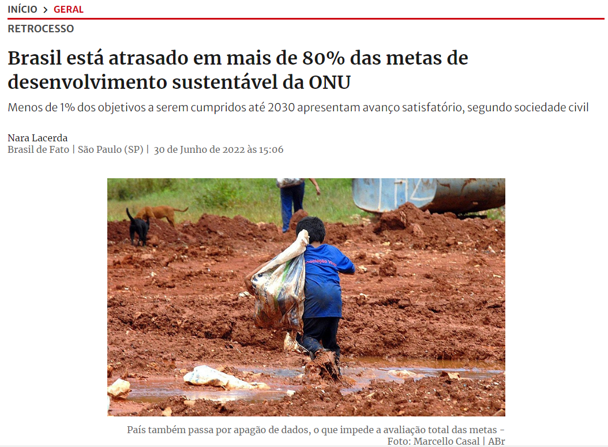
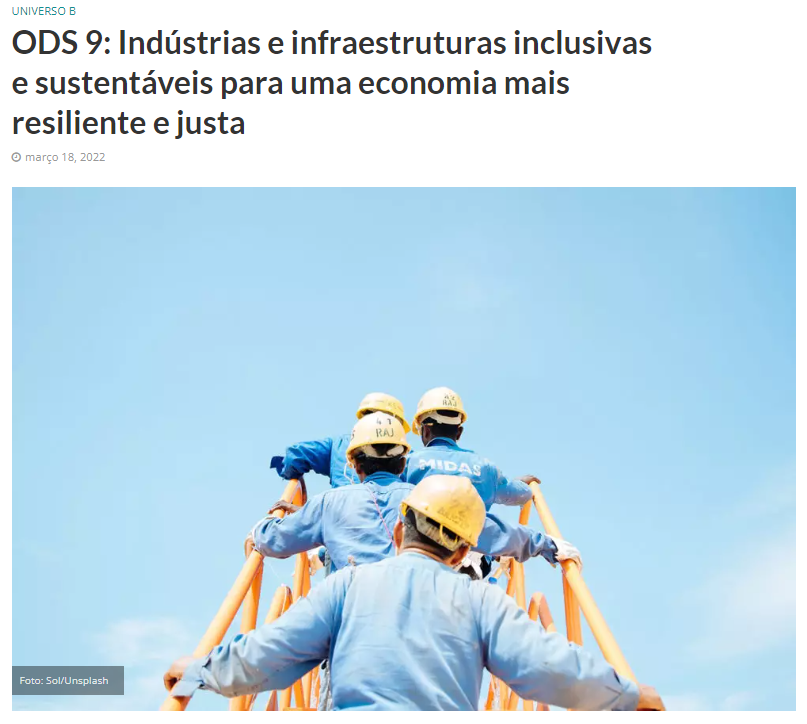
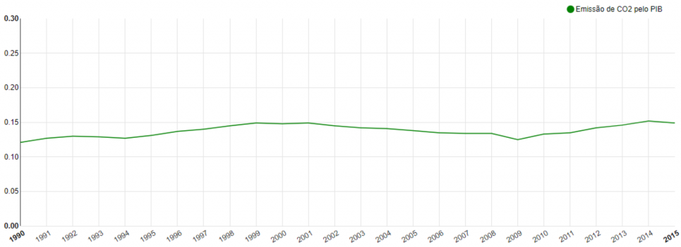

O que é a ODS 9?
A ODS 9, ou Objetivo de Desenvolvimento Sustentável 9, é uma das metas estabelecidas pela Organização das Nações Unidas (ONU) para promover um desenvolvimento sustentável global até o ano de 2030. Essa meta tem como foco a construção de infraestruturas resilientes, a promoção da industrialização inclusiva e sustentável, além de incentivar a inovação e a adoção de tecnologias. A ODS 9 reconhece a importância de investimentos em infraestrutura para o crescimento econômico e a melhoria da qualidade de vida das pessoas. Ela visa garantir o acesso equitativo e apropriado a infraestruturas de qualidade, incluindo transporte, energia, água e saneamento básico, além de promover o desenvolvimento de sistemas de transporte sustentáveis e acessíveis.
Quais os projetos que ocorrem no mundo?
ODS 9
no
Brasil



segundo o Relatório de Desenvolvimento Sustentável 2019, o Brasil está no caminho certo em um dos indicadores do ODS 9
Indicador 9.4.1 - Emissão de CO2 pelo PIB
